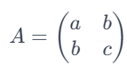
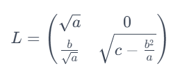

Cholesky Decomposition adalah metode dalam aljabar linear untuk mendekomposisi matriks simetris yang positif-definit menjadi matriks segitiga bawah dan transposenya. Metode ini dinamakan sesuai dengan matematikawan Prancis André-Louis Cholesky, yang mengembangkan metode dekomposisi Cholesky.
Proses ini melibatkan penjabaran matriks A ke dalam lower triangular matrix (L) dan transpose-nya (LT), sehingga A = L*LT. Matriks L adalah matriks segitiga bawah yang di mana bagian atas kanan diagonal matriks bernilai 0 (nol). Contohnya pada matriks L, Lij = 0, di mana i < j.
Dekomposisi Cholesky banyak digunakan dalam analisis numerik. Ini sangat berguna untuk menyelesaikan sistem persamaan linear, menginverskan matriks, dan untuk simulasi Monte Carlo yang efisien dalam keuangan. Juga digunakan dalam algoritma untuk pendekatan least squares, filter Kalman, dan dalam simulasi proses acak.
Misalkan kita memiliki matriks simetris positif definit A. Kita ingin menemukan matriks segitiga bawah L sedemikian sehingga A = LLT. Berikut adalah contoh matriks A dan hasil dekomposisi Choleskynya:
Matriks A:
Matriks L (hasil dekomposisi):
Dekomposisi Choleskynya mungkin menghasilkan L:
Dan dengan demikian A = LLT.